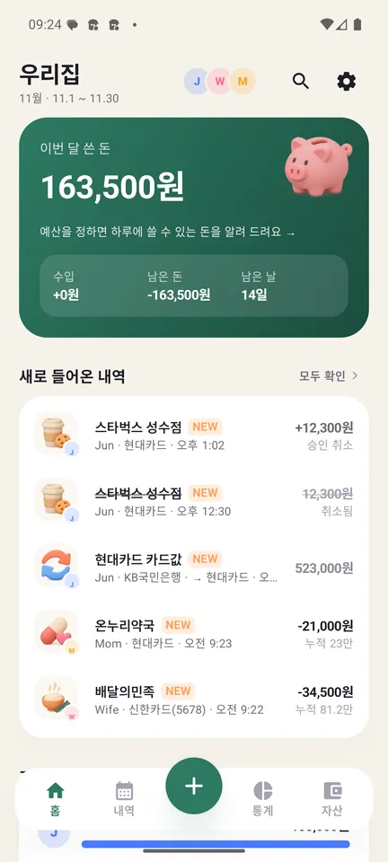
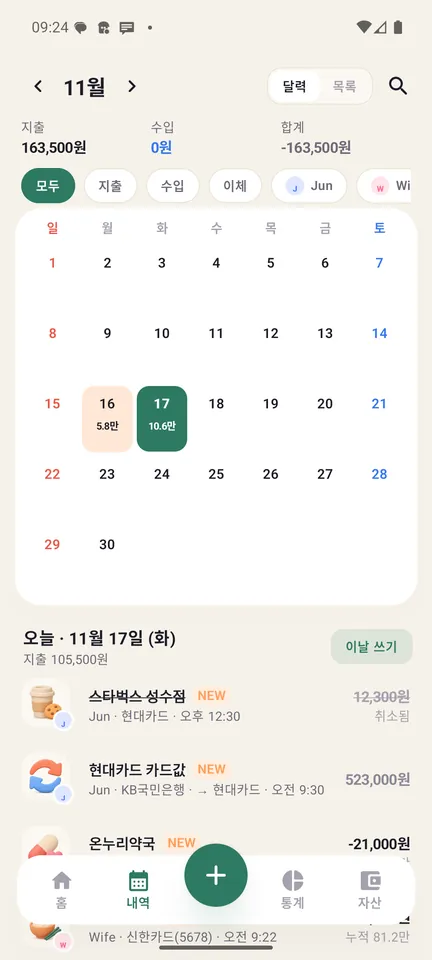
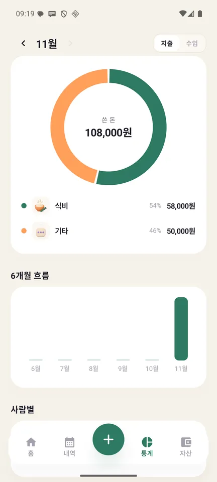
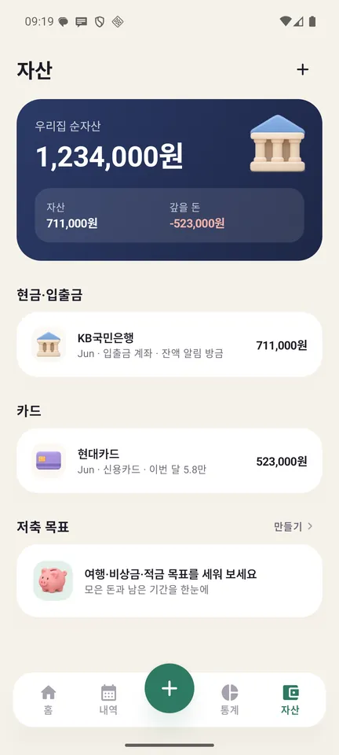
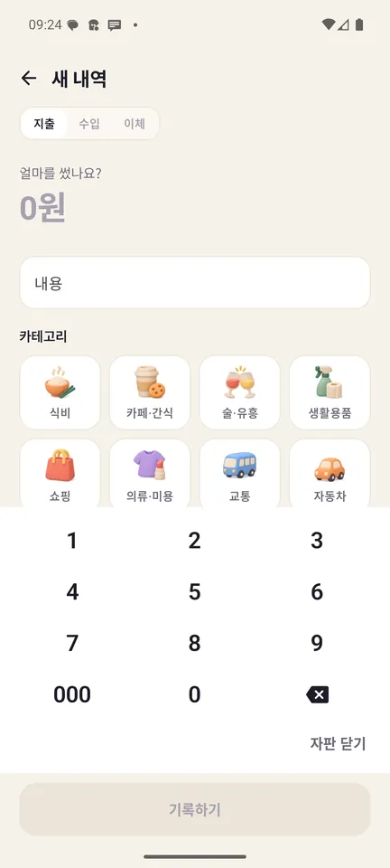

카드 알림이 오면
바로 장부에, 가족 폰에
남편이 현대카드를 쓰면 아내 폰에 "남편이 현대카드로 12,300원 썼어요 · 누적 523,000원". 문자를 그대로 넘기는 대신 도란이 읽어서 같은 가계부에 기록하고 알려 줘요.
Android 10 이상 · 무료 · 광고 없음 · 내용은 우리 폰에서만 열려요
지금은 가족끼리 시험 중이라 테스터로 등록된 Google 계정만 받을 수 있어요.
APK 직접 받기(Play 프로텍트가 설치를 막을 수 있어요)





알림이 오면 바로 기록
카드사·은행 앱 알림, 카카오톡 알림톡, 문자를 읽어요. 같은 결제는 한 번만, 승인 취소는 상쇄, 카드값 출금은 이체로.
QR 한 번으로 가족 연결
배우자는 같은 장부를, 부모님은 카드 알림만 보내요. 보낸 내역은 사람별로 보이고 합계에 더해져요.
예산·고정지출·목표·용돈
달력·통계·자산 한눈에, 예산 초과 알림, 고정지출 자동 기록, 저축 목표, 가족에게는 합계만 보이는 용돈.
시작하는 법
- 한 사람이 도란을 설치하고 "새 가계부 시작하기". 이름(남편·아내 등)을 고르면 끝이에요.
- 홈의 "QR 띄우기"로 가족을 초대해요. 가족은 폰 기본 카메라로 찍기만 하면 돼요. 도란이 없으면 설치부터 안내하고, 설치하면 그대로 연결돼요.
- 알림 자동 기록을 켜요. 도란 → 알림 자동 기록에서 알림 접근을 허용해요.
예전처럼 "문자 자동 전달" 앱으로 카드 문자를 넘기고 있었다면 꺼도 돼요. 켜 둔 채여도 도란은 휴대폰 번호에서 넘어온 카드 문자는 읽지 않아 두 번 기록되지 않아요.
안전하게
장부는 가족 폰끼리만 열 수 있게 암호화해서 주고받아요. 중계 서버와 Google은 금액·가맹점을 볼 수 없어요. 업데이트는 Google Play가 해요. 개인정보 처리 안내